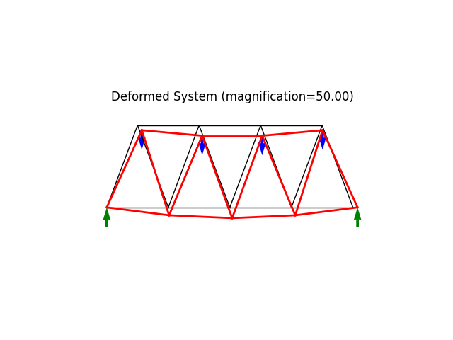

Note
Go to the end to download the full example code
Statically determinate truss bridge.
The system is statically determined and allows for relatively easy validation of calculated deformation, reactions and internal forces.
Author: Peter Mackenzie-Helnwein
from femedu.examples.Example import *
from femedu.domain.System import *
from femedu.solver.NewtonRaphsonSolver import NewtonRaphsonSolver
from femedu.domain.Node import *
from femedu.elements.Truss import *
from femedu.materials.FiberMaterial import *
class ExampleTruss02(Example):
def problem(self):
# initialize a system model
P = -10.0 # reference load on top nodes
B = 6.0 * 12 # with of one bay in inches
H = 8.0 * 12 # height of one bay in inches
# material model parameters
params = {'E': 10000., 'A': 3., 'nu': 0.0, 'fy': 1.e30}
model = System()
model.setSolver(NewtonRaphsonSolver())
# create nodes
nd0 = Node(0.0, 0.0)
nd1 = Node( B, 0.0)
nd2 = Node(2*B, 0.0)
nd3 = Node(3*B, 0.0)
nd4 = Node(4*B, 0.0)
nd5 = Node(0.5*B, H)
nd6 = Node(1.5*B, H)
nd7 = Node(2.5*B, H)
nd8 = Node(3.5*B, H)
model.addNode(nd0, nd1, nd2, nd3, nd4, nd5, nd6, nd7, nd8)
# create elements
model.addElement(Truss(nd0, nd1, FiberMaterial(params))) # bottom 1
model.addElement(Truss(nd1, nd2, FiberMaterial(params))) # bottom 2
model.addElement(Truss(nd2, nd3, FiberMaterial(params))) # bottom 3
model.addElement(Truss(nd3, nd4, FiberMaterial(params))) # bottom 4
model.addElement(Truss(nd5, nd6, FiberMaterial(params))) # upper 1
model.addElement(Truss(nd6, nd7, FiberMaterial(params))) # upper 2
model.addElement(Truss(nd7, nd8, FiberMaterial(params))) # upper 3
model.addElement(Truss(nd0, nd5, FiberMaterial(params))) # up right diag 1
model.addElement(Truss(nd1, nd6, FiberMaterial(params))) # up right diag 2
model.addElement(Truss(nd2, nd7, FiberMaterial(params))) # up right diag 3
model.addElement(Truss(nd3, nd8, FiberMaterial(params))) # up right diag 4
model.addElement(Truss(nd1, nd5, FiberMaterial(params))) # up left diag 1
model.addElement(Truss(nd2, nd6, FiberMaterial(params))) # up left diag 2
model.addElement(Truss(nd3, nd7, FiberMaterial(params))) # up left diag 3
model.addElement(Truss(nd4, nd8, FiberMaterial(params))) # up left diag 4
# define support(s)
nd0.fixDOF('ux', 'uy') # horizontal support left end
nd4.fixDOF('uy') # vertical support right end
# add loads
# .. load only the upper nodes
nd5.setLoad((P,), ('uy',))
nd6.setLoad((P,), ('uy',))
nd7.setLoad((P,), ('uy',))
nd8.setLoad((P,), ('uy',))
model.plot(factor=1., filename="truss02_undeformed.png", title="Undeformed System")
# analyze the model
model.solve()
# write out report
model.report()
# create plots
model.plot(factor=20., filename="truss02_deformed.png")
model.beamValuePlot('f',filename="truss02_forces.png")
Run the example by creating an instance of the problem and executing it by calling Example.run()
if __name__ == "__main__":
ex = ExampleTruss02()
ex.run()

- 

norm of the out-of-balance force: 2.0000e+01
norm of the out-of-balance force: 3.8641e-01
norm of the out-of-balance force: 1.9880e-04
norm of the out-of-balance force: 1.7725e-06
norm of the out-of-balance force: 1.1472e-09
+
System Analysis Report
=======================
Nodes:
---------------------
Node_0:
x: [0. 0.]
fix: ['ux', 'uy']
u: [0. 0.]
Node_1:
x: [72. 0.]
u: [ 0.0175857 -0.18448191]
Node_2:
x: [144. 0.]
u: [ 0.05359577 -0.25049274]
Node_3:
x: [216. 0.]
u: [ 0.08960584 -0.18448191]
Node_4:
x: [288. 0.]
fix: ['uy']
u: [0.10719154 0. ]
Node_5:
x: [36. 96.]
P: [ 0. -10.]
u: [ 0.0988544 -0.11512624]
Node_6:
x: [108. 96.]
P: [ 0. -10.]
u: [ 0.07160681 -0.2437961 ]
Node_7:
x: [180. 96.]
P: [ 0. -10.]
u: [ 0.03558474 -0.2437961 ]
Node_8:
x: [252. 96.]
P: [ 0. -10.]
u: [ 0.00833714 -0.11512624]
Elements:
---------------------
Truss: node 0 to node 1:
material properties: FiberMaterial(Material)({'E': 10000.0, 'A': 3.0, 'nu': 0.0, 'fy': 1e+30}) strain:0.00025074648384184977 stress:{'xx': 2.5074648384184974, 'yy': 0.0, 'zz': 0.0, 'xy': 0.0}
internal force: 7.522394515255492
Pe: [ 7.522369834729211 -0.01926947591183249 ]
Truss: node 1 to node 2:
material properties: FiberMaterial(Material)({'E': 10000.0, 'A': 3.0, 'nu': 0.0, 'fy': 1e+30}) strain:0.0005007291419303546 stress:{'xx': 5.007291419303546, 'yy': 0.0, 'zz': 0.0, 'xy': 0.0}
internal force: 15.021874257910639
Pe: [ 15.021867950880157 -0.013765420367433319 ]
Truss: node 2 to node 3:
material properties: FiberMaterial(Material)({'E': 10000.0, 'A': 3.0, 'nu': 0.0, 'fy': 1e+30}) strain:0.0005007291419303549 stress:{'xx': 5.00729141930355, 'yy': 0.0, 'zz': 0.0, 'xy': 0.0}
internal force: 15.02187425791065
Pe: [ 15.021867950880168 0.01376542036743333 ]
Truss: node 3 to node 4:
material properties: FiberMaterial(Material)({'E': 10000.0, 'A': 3.0, 'nu': 0.0, 'fy': 1e+30}) strain:0.0002507464838418496 stress:{'xx': 2.507464838418496, 'yy': 0.0, 'zz': 0.0, 'xy': 0.0}
internal force: 7.522394515255488
Pe: [ 7.522369834729208 0.01926947591183248 ]
Truss: node 5 to node 6:
material properties: FiberMaterial(Material)({'E': 10000.0, 'A': 3.0, 'nu': 0.0, 'fy': 1e+30}) strain:-0.00037538480057393075 stress:{'xx': -3.7538480057393073, 'yy': 0.0, 'zz': 0.0, 'xy': 0.0}
internal force: -11.261544017217922
Pe: [ -11.261526020872378 0.020132882335703713 ]
Truss: node 6 to node 7:
material properties: FiberMaterial(Material)({'E': 10000.0, 'A': 3.0, 'nu': 0.0, 'fy': 1e+30}) strain:-0.0005005569620258933 stress:{'xx': -5.005569620258933, 'yy': 0.0, 'zz': 0.0, 'xy': 0.0}
internal force: -15.016708860776799
Pe: [ -15.016708860776799 -0.0 ]
Truss: node 7 to node 8:
material properties: FiberMaterial(Material)({'E': 10000.0, 'A': 3.0, 'nu': 0.0, 'fy': 1e+30}) strain:-0.00037538480057393075 stress:{'xx': -3.7538480057393073, 'yy': 0.0, 'zz': 0.0, 'xy': 0.0}
internal force: -11.261544017217922
Pe: [ -11.261526020872378 -0.020132882335703713 ]
Truss: node 0 to node 5:
material properties: FiberMaterial(Material)({'E': 10000.0, 'A': 3.0, 'nu': 0.0, 'fy': 1e+30}) strain:-0.0007116613116108842 stress:{'xx': -7.116613116108842, 'yy': 0.0, 'zz': 0.0, 'xy': 0.0}
internal force: -21.349839348326526
Pe: [ -7.522369835242063 -19.980730523711888 ]
Truss: node 1 to node 6:
material properties: FiberMaterial(Material)({'E': 10000.0, 'A': 3.0, 'nu': 0.0, 'fy': 1e+30}) strain:-0.00035632002035970636 stress:{'xx': -3.5632002035970634, 'yy': 0.0, 'zz': 0.0, 'xy': 0.0}
internal force: -10.68960061079119
Pe: [ -3.7603419303493437 -10.006367462025565 ]
Truss: node 2 to node 7:
material properties: FiberMaterial(Material)({'E': 10000.0, 'A': 3.0, 'nu': 0.0, 'fy': 1e+30}) strain:-4.900147529657656e-07 stress:{'xx': -0.004900147529657656, 'yy': 0.0, 'zz': 0.0, 'xy': 0.0}
internal force: -0.014700442588972969
Pe: [ -0.005159090196145099 -0.013765420467959914 ]
Truss: node 3 to node 8:
material properties: FiberMaterial(Material)({'E': 10000.0, 'A': 3.0, 'nu': 0.0, 'fy': 1e+30}) strain:0.00035590035722511047 stress:{'xx': 3.559003572251105, 'yy': 0.0, 'zz': 0.0, 'xy': 0.0}
internal force: 10.677010716753315
Pe: [ 3.739156185366705 10.00086340608145 ]
Truss: node 1 to node 5:
material properties: FiberMaterial(Material)({'E': 10000.0, 'A': 3.0, 'nu': 0.0, 'fy': 1e+30}) strain:0.000355900357225111 stress:{'xx': 3.55900357225111, 'yy': 0.0, 'zz': 0.0, 'xy': 0.0}
internal force: 10.67701071675333
Pe: [ -3.739156185366708 10.000863406081466 ]
Truss: node 2 to node 6:
material properties: FiberMaterial(Material)({'E': 10000.0, 'A': 3.0, 'nu': 0.0, 'fy': 1e+30}) strain:-4.90014752965791e-07 stress:{'xx': -0.00490014752965791, 'yy': 0.0, 'zz': 0.0, 'xy': 0.0}
internal force: -0.01470044258897373
Pe: [ 0.005159090196145366 -0.013765420467960627 ]
Truss: node 3 to node 7:
material properties: FiberMaterial(Material)({'E': 10000.0, 'A': 3.0, 'nu': 0.0, 'fy': 1e+30}) strain:-0.00035632002035970646 stress:{'xx': -3.5632002035970647, 'yy': 0.0, 'zz': 0.0, 'xy': 0.0}
internal force: -10.689600610791194
Pe: [ 3.760341930349344 -10.00636746202557 ]
Truss: node 4 to node 8:
material properties: FiberMaterial(Material)({'E': 10000.0, 'A': 3.0, 'nu': 0.0, 'fy': 1e+30}) strain:-0.0007116613116108844 stress:{'xx': -7.1166131161088435, 'yy': 0.0, 'zz': 0.0, 'xy': 0.0}
internal force: -21.34983934832653
Pe: [ 7.522369835242063 -19.98073052371189 ]
Total running time of the script: ( 0 minutes 0.357 seconds)